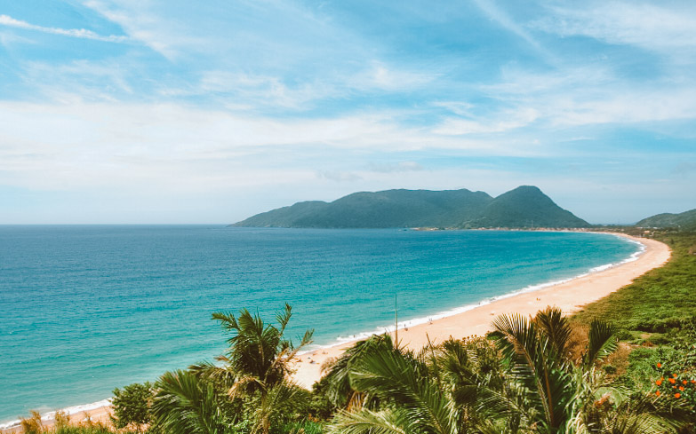

Descobrindo: Praias do Nordeste
O Nordeste é famoso por suas praias bonitas e clima agradável.
Na viagem, conheci lugares incríveis e aproveitei muito.
Uma das praias que mais me impressionou foi Porto de Galinhas, em Pernambuco. As piscinas naturais formadas pelos recifes de corais permitem observar peixes coloridos bem de perto, tornando o passeio ainda mais especial.
Também visitei Maragogi, em Alagoas, um destino famoso por suas águas extremamente transparentes. O passeio de barco até as galés é uma experiência imperdível para quem quer mergulhar e explorar a vida marinha.
